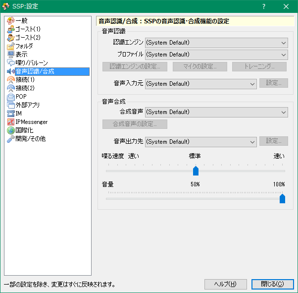

設定：音声認識/合成
画像左側のリストをクリックすると、それぞれの解説ページへ移動します。

このページでは右クリックメニューの「設定」サブメニューにある項目「本体設定」で開くダイアログの、「音声認識/合成」ページについて解説しています。
通常はほぼ変更の必要はありません。
各項目の解説
音声認識
- 認識エンジン
- 音声認識エンジンを変更します。(System Default)で音声認識コントロールパネルで選択したものが使用されます。
- プロファイル
- 認識精度を高めるための学習情報を切り替えます。(System Default)で音声認識コントロールパネルで選択したものが使用されます。
- 認識エンジンの設定・マイクの設定・トレーニング
- それぞれ、認識エンジンによっては設定可能になります。通常はすべて無効です。
- 音声入力元
- 音声入力元となるマイク端子やヘッドセットなどを切り替えます。(System Default)で音声認識コントロールパネルで選択したものが使用されます。
音声合成
- 合成音声
- 発声する声の種類を変更します。(System Default)で音声認識コントロールパネルで選択したものが使用されます。
「合成音声の設定...」から追加の設定ができる発声エンジンもあります。設定できない場合は無効ボタンのままになります。 - 音声出力先
- 出力するスピーカー/イヤホン端子等出力先を切り替えます。(System Default)で音声認識コントロールパネルで選択したものが使用されます。
- 喋る速度
- 読み上げるスピードを設定します。通常バルーンよりは遅いので、少し早めにしておくと良いかもしれませんが、あまり早くすると聞き取りづらくなります。
- 音量
- 発声する音量を設定します。
下部のボタン
- ヘルプ
-
本体設定ダイアログの、設定中のページのヘルプ（つまりこのページ）を開きます。
ダイアログ右上の「？」マークも同様です。 - 閉じる
-
本体設定ダイアログを閉じます。
ダイアログ右上の「×」マークも同様です。